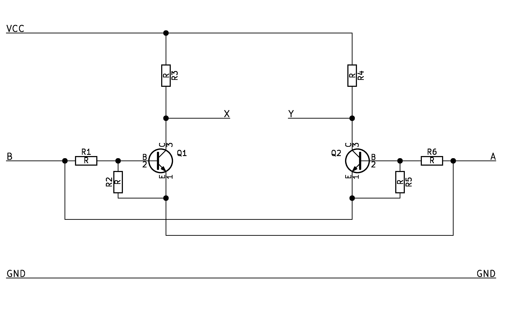
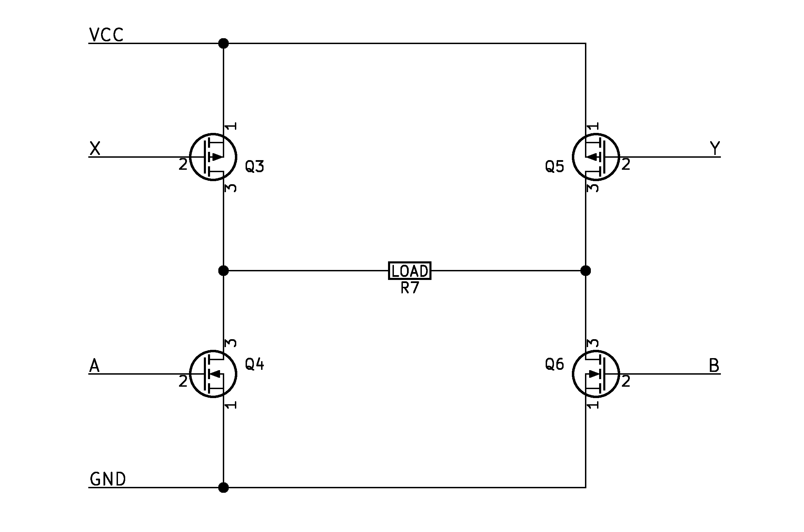
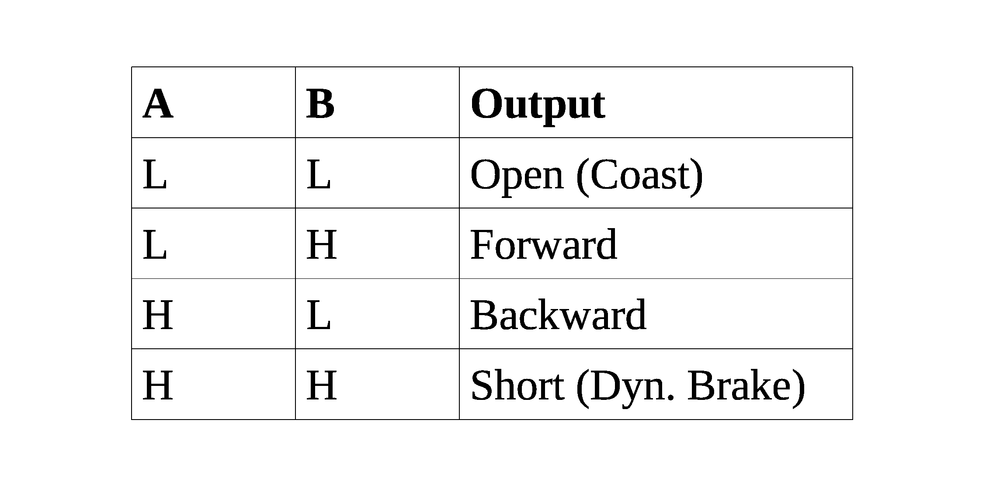

Here is a control circuit for reducing the four-wire H-bridge control logic to only two wires. As shown by Figure 1, the inputs are A and B, while the outputs are A, B, X, and Y.

Figure 1. The control circuitThis circuit
An H-bridge is a circuit for applying a positive voltage, a negative voltage, a short, or an open float across a circuit. These four states are derived from how the controller drives the four transistors that make up the H-bridge. However, the four binary inputs to the H-bridge transistors allows for 2^4 = 16 different states, some of which are redundant, invalid, or destructive.
The control circuit described here eliminates 12 undesired states, while providing the user access to four useful states, with an addition of two control transistors.

Figure 2. An H-BridgeThe circuit works by allowing the user to directly control the bottom H-bridge transistors while computing logic to drive the top transistors based on the input of the lower transistors.
The upper H-bridge transistors only turn on when there is a differential signal from the two inputs to the lower transistors. The circuit rejects common mode control for the upper H-bridge transistors. In other words, the signals to the bottom H-bridge transistors must be different from each other for any of the top transistors to turn on.
When inputs A and B are described as "high," it means that they provide a voltage that can turn on the two control transistors. "Low" means that the control transistors are off. The threshold voltage can be set by the resistors R1, R2, R5, and R6. For example, R1 = 10 kOhms and R2 = 10 kOhms would allow Q1 to turn on from inputs that are higher than 1.4 V (two times a Vbe of 0.7 V).
If the H-bridge is used to control a DC motor, the "open" state corresponds to letting the motor coast, while the "short" state corresponds to dynamic braking of the motor.
Refer back to the schematics for the following walk-through of the states.
The open state applies an open float across the load R7. In this state, input B and input A are both low. Q4 and Q6 are also both off due to direct control by the inputs.
Since input B and input A are the same, there is zero base-emitter voltage both Q1 and Q2, so Q1 and Q2 remain off. This means the collectors of Q1 and Q2 are both pulled up to VCC, which turns off Q3 and Q5.
The forward state applies a positive voltage across the load R7. In this state, input B is high and input A is low. Q6 is on, while Q4 is off.
Because input B is higher than input A, Q1's base-emitter junction is forward biased while Q2's base-emitter junction is reversed biased. Q1 turns on while Q2 is off. Q1's collector voltage is pulled low while Q2's collector voltage is high. In this way, Q3 turns on while Q5 remains off. A path of current through the load R7 is formed by Q3 and Q6.
The backward state applies a negative voltage across the load R7, In this state, Input B is low and input A is high. Q6 is off, while Q4 is on.
The backward state is essentially the forward state in reverse. Q1 is off while Q2 turns on, which means Q3 is off and Q5 turns on. A path of current through the load R7 is formed by Q5 and Q4.
The short state applies a short across the load R7. In this state, input B and input A are both high. Q4 and Q6 are also both on.
Since input B and input A are the same, there is zero base-emitter voltage on both Q1 and Q2, so Q1 and Q2 remain off. Thus, both Q3 and Q5 are off. As a result, Q4 and Q6 pull both sides of the load R7 toward ground and short R7.

Figure 4. Summary of the statesThe lower H-bridge FETs need a Vgs threshold that is lower than the user's input voltage. The upper H-bridge FETs need a Vgs threshold that is lower than VCC-Vce(sat), where Vce(sat) is the control transistors' saturation voltage.
The two control BJTs can be arbitrarily chosen as long as the bias resistors R1, R2, R5, and R6 allow a given input to easily turn on the BJTs. A recommendation is the MUN5211 pre-biased dual-transistor package, which implements most of the circuit in a single part, excluding the collector resistors.
The collector resistors of the control BJTs should be chosen to maximize transition speed without excessive current consumption. A small resistance should be used if the collectors are directly connected to the upper H-bridge FETs, while a large resistance can be used if a gate driver is used.
Written on the 10th of October in 2016
{kind=link}
{kind=link}
{kind=link}
{kind=link}
{kind=link}